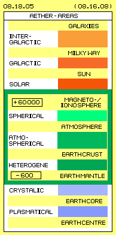

Subjects
Here is assumed the planets are drifting only pure passive within sun-whirlpool (without need of any attraction). The sun is a loose accumulation of gas-particles at centre of that wide aether-vortex. The internal structure and motion-processes are primary based on behaviour of the aether and the ´material´ appearances are only secondary. At the other hand the transition is smooth, because photons, electrons and atoms are motion-pattern of aether within aether. This starting-point clearly differs that ´Aether-Physics of Sun´ from common physics and other alternative hypotheses.
The basics of aether-physics are described in details by previous chapters. Nevertheless some relevant facts must be mentioned once more, even some simple stuff: what´s the difference between material and aetheric potential-vortices? How behave gas-particles within closed system (thermodynamics of common technologies) and in open system (of sun)? How can come up hot and cold zones in spite of energy-constant (and entropy)? How functions nuclear-fusion if no nucleon particles exist? Which forces are acting at H-bomb, supernova or cavitation (far beyond chemical or electromagnetic reactions)? When have sun-spots any affect to the earth? Why is the equator of sun faster turning than the poles? For these ´hot´ questions (and some other phenomena) this chapter offers ´cool´ answers.
Air-Potential-Vortex
In earlier chapters comprehensive was described how that self-acceleration comes up. Within wide environment exists atmospheric pressure. The vortex does not show according sideward pressure (into radial direction). So diagonal inflow comes up and static pressure of environment becomes transferred into dynamic flow-pressure. However such ´material´ potential-vortices can only exist if corresponding air-masses can flow off axial upward (and drop down again far off). Within a material potential-vortex thus particles are traveling through space by certain motion-pattern, more or less far.
Below right side of picture that circled swinging-with-stroke is sketched by diverse arrow-circles (see G). Also all neighbouring aether-points inside and outside of must show analogue motions. Towards outside, the strokes generally must be reduced (here represented by some smaller arrow-circles F), until finally transmitting into neutral swinging of Free Aether of environment. Analogue to previous material potential vortex, the intensity can not rise infinitely towards the centre, but quite inside will exist a rigid vortex (H, dark green).
Opposite to material potential-vortex, within an aether-vortex won´t exist wide-ranged motions. All times there is only a narrow swinging of all aether, most parallel with all neighbours. So within aether exists a common swinging, each aether-point around its own fulcrum. Within gapless aether, aether-´particles´ can never rotate around a common central axis or fly off far through space, like previous air-particles do. Also opposite to material vortex, within aether exist no sideward flow-in nor axial flow-off. However all areas must behave congruent all times, i.e. these aether-vortices are working infinitely. Previous small whirlwind is only a short interaction between air-particles and thus the aether is not involved. The large ´dust-accumulations´ of stars however represent long-term and steady rotating masses and these well interact with all aether of these spaces. However it´s just opposite: the material motions are only the visual expression of invisible aether-vortices.
Aether-Whirlpools
In principle is valid within gapless aether (without any elasticity and with its constant ´density´), the distances between neighbouring aether-points must keep constant. So if here the horizontal level (blue curve) is bended, the connecting lines (black curves) upside and below must show analogue curvature, up to the system axis (red curve). This results, the axis of celestial bodies are some inclined towards the equatorial plane of their whirlpools (e.g. sun, earth and other planets).
In principle naturally also is valid, motion intensity towards outside becomes weaker, into horizontal like in vertical direction (see arrow-circles A - B and C - D), each up to surrounding Free Aether. Along the vertical system axis, the radius of swinging decreases just simple, like sketched here by (curved) cone E. The stroke-component of motion gradually decreases from level to level, so without problem the divergence towards Free Aether is reduced. Some more difficult is the balance of strokes at horizontal level F. Resulting are whirlpools with contours more flat (comprehensive details see previous chapters). At any case, a star is only the visible core (G, grey) of an aether-whirlpool multiple wider. That vortex reaches far out upside and below of turning axis. Into equatorial direction, the whirlpool-disk is wider and particular visible by planets. The primary fact of these ´celestial objects´ is the aether-vortex, within which - secondary - material particles are passive drifting.
General Aether-Pressure
Right side are drawn two aether-points (E) and their connecting line (black). These aether-points move same distances each time-unit, however at tracks more narrow. A measuring instrument (B, grey) between again will register stronger pressure at right side, because the aether there affects thrust onto that ´wall´ more frequent. So like upside the electromagnetic waves, also at ´stationary´ swinging-motions the higher frequencies affect the stronger pressure. These motion-processes are visualized by corresponding animation.
At row below at that picture 08.18.03 that ´Law of Universal Aether-Pressure´ once more is shown by a graph: within aether all times exists a pressure-gradient (arrow H) from area of narrow swinging (F, light green) towards area of wide swinging (G, dark green). The fine swinging of narrow tracks of the Free Aether affects pressure onto the coarse swinging at longer tracks of Bound Aether. By other words, the ´chaotic´ motions (with short and sharp curved sections of track) of Free Aether is affecting a general pressure onto all wider vortex-systems (with their synchronous and ordered motions at longer sections of tracks).
Based on general steady pressure of chaotic or narrow motions onto local areas of ordered or wider swinging, the cohesion of local motion-units is resulting - from size of electron up to galaxy by likely law. These whirlpools are potential vortices, towards inward showing increasing stronger strokes at wider tracks. The resulting pressure-gradient is minimum however working steady onto material particles as soft centripetal thrust. Also huge masses of ´dust´ thus can be shifted together for building planets or stars.
Gravity-Waves or Gravitons
These hypotheses do not work, e.g. because the earth draws only a minute ´shadow-spot´ at sun-surface. From outer planets that shadow practically is null. In addition these hypotheses do not take in account, any pressure-wave naturally will be bend around celestial bodies, i.e. the sun can not offer any shade for its planets at all. Totally incomprehensible is the idea of ´gravitons´, which like wanted ´Higg´s particle´ should work anyhow like ´glue-paste´.
Earth-Gravity 
Opposite, just the most weak force of gravity shall have affects unlimited, i.e. throughout the universe. In spite of fictive implantation of 95 % ´dark matter´ the effects of the gravity forces still are completely contradicting. At previous chapters was clear described, how and why planets and moons drift around within aether-whirlpools - without need of any attracting force. Just the strange behaviour of geostationary satellites proved the earth-aether-vortex and thus real existence of aether without any doubt.
Chapter 08.16. ´Nature of Gravity and Structure of Earth´ describes in details, why and within which limited sphere around earth-surface exists an ´earthly gravity field´. Picture 08.16.08 of that chapter here is shown once more as picture 08.18.05. The gravity-effect exists only down to maximum 600 km depth and up in the atmosphere until magnetopause, so maximum to 60 000 km height. The cause once more is a pressure-gradient within aether, here of the aether between atoms.
Already at magnetopause the hard radiation is filtered off, i.e. the aether is less pushed-around and thus is moving increasingly more calm near to the earth. Within earth-crust, that tremor of hard radiation exists no longer. The atoms there stand nearby each other and their wide-range ordered swinging is transmitted into the aether between atoms, at least by parts. Within an area of ordered material vortices, for example at crystals, the Free Aether is also swinging at tracks some enlarged. The aether practically takes a ´coarse-matter´ characteristic, which also is reaching above earth-surface. That transition from narrow, chaotic motions outside of magnetopause to swinging some more coarse between material particles, that difference results the pressure-gradient. And this again affects as a thrust-component onto motion-pattern of material particles, into radial direction towards earth centre.
Gravity within Gas
So, at any case, earth-gravity can not be handled as universal constant and not even can be transferred to sun and planets. All masses of all celestial bodies were calculated at that basis, by mutual conditions, thus by circle-conclusion. That´s why also the calculated data of atmospheric pressure, of density and temperatures of sun and gas-planets are useless, just fictive numbers.
Pressure, Volume, Heat
Upside left shows the starting situation by ´standard-conditions´. The gas-particles A are pushing onto the face of mercury B and lift that heavy fluid (blue) some up, because at upside end of pipe the vacuum (white) affects no counter-pressure. At normal atmospheric pressure the mercury-column would show about 760 mm height. The heat of a gas C is based on the speed of its particles. Within the thermometer D that speed is transferred onto a medium (blue) and its heat-related expansion marks the temperature, e.g. 20 degree Celsius.
Normally now is assumed, same time the temperature should rise. The medium within the thermometer is ´trembling´ by same speed like the gas-particle and thus showing the gas-temperature. It does not matter, how many gas particles transfer their speed into the measure-instrument. So in principle the temperature of gas is unchanged, no matter the volume of tank is reduced or enlarged. Below right of picture, the piston F is guided down again. The temperature still is unchanged. Onto the measure-face of barometer now less particles are hitting each time unit, so some weaker pressure is indicated.
Heat-Loss and Efficiency
The second difference depends on the speed of changes. The temperature keeps constant, if previous piston E and F move slow or based on ´static´ pressures the density of gases varies only gradual (like at open systems). At combustion-engines however the pistons move fast and at compression-phase the volume decreases in short time. At compression-phase, when particles hit onto the piston, they are rejected by faster speed, so the gas will heat up (like already remarkable at bicycle-pump). At the expansion-phase, process is reverse: all particles hitting onto the piston are rejected at this back-stepping face by reduced speed, so the gas cools down. These processes are described comprehensive at chapter ´05.13. Explosion / Implosion´.
The cooling however is only gradual, so invested mechanic work (pushing the piston into the cylinder) and the input of heat-energy is transformed into usable turning momentum only by parts. The common thermodynamics thus describe only the result of an insufficient technology. Unfortunately resulted the maxim, machines could be build only with an efficiency < 1. However, the universe and the sun most work without loss, otherwise all motions would have stopped and everything would be numb with cold long since.
Zero-Point-Energy and Plasma
Physicians are astonished, even near absolute zeropoint, still motion exists within the tank. Especially the helium shows extreme properties, e.g. flowing up walls. The atoms even can blow up their volumes to size of millimeter. And within that ´plasma´ internal motions are easy to detect (details see chapter ´08.13. Aether-Model of Atoms´).
Still one avoids to use the term ´aether´. Instead of, one discusses ´dark matter´ or ´zeropoint-energy´ of undefined properties. As a substitute, one assumes the universe could be filled up by a plasma, e.g. existing by ´electromagnetic particles´ (of undefined species) and e.g. celestial bodies would interact via attraction and rejection (again without clear idea how the processes should really work).
By view of undividable aether, the total substance does swinging motions all the times, naturally also at low temperatures. Within that universal medium are swimming local vortex-complexes (e.g. of ´material atoms´), many or few within a volume-unit (commonly called density). These motion-pattern occasionally wander through the ´stationary´ aether some distance within a time-unit (and only that speed corresponds to common understanding of heat). Or by other words: without that wandering, nearby same amount of motion exists within an area of aether.
Speed and Density
So if within a star many particles should be gathered at a narrow space - does not automatically result high temperature (like commonly and ´naturally´ is assumed). If far out there at universe the temperature should be only few degree Kelvin - so there might be rather few ´dust-particles´, however their speed must not be as slow like at previous zeropoint-experiments.
Moving through Space
At upper layers the density is less (middle green) and thus it will take some longer time, until after a longer distance next collision with a particle G occurs. Within areas of even less density (light green), collisions come up after once more longer time and distance. Finally however a particle H will go on flying up and away, still with the original speed. This must not be the theoretic necessary ´escape-velocity´ and no alleged attracting force of earth-mass will keep back that particle.
Thus also far away at ´empty and cold space´ particles are flying with speeds, they got when starting the travel. The particles won´t fly straight ahead, but e.g. are redirected into turning sense by the aether-whirlpool of earth, afterward long times again into turning sense of sun-whirlpool. The particles won´t fly by constant speed, but are decelerated and accelerated when crossing areas of massive radiations (e.g. ´electromagnetic´, spiral turning pipes of sun-wind towards all planets, see previous chapter). So the reality within space is quite an other than situation of previous zeropoint-experiments, concerning motion of particles and naturally also concerning the continuous motions of omnipresent aether.
Fog Patches
Materia is not spread equal within universe, but builds a ´spun yarn´ of files and clouds, of more or less thickness. Remarkable are the relative sharp edges or membranes, which exist even around soft hazes. At previous supernova the thickening comes up, as the frontside particles are delayed by any resistance, while later particles can follow undisturbed. At these ´resting or calm´ hazes however the building of the outer shells must have other reasons. It can not be caused by gravity of common sense. Otherwise the thickness might not be at the border but at the middle.
Between the edges and central areas of patches is a difference of arriving radiation. Steady radiation pressure affects thrust onto particles, even the ´mass of photon´ is much smaller than atomic masses. At the other hand, radiation can be absorbed by atoms. At any case, less radiation exists within the cloud than at its border. The particles of the outer layers of a cloud thus become condensed and thus building a membrane.
Radiation and Condensation
This situation is sketched at C: two atoms fly diagonal into the cloud (analogue to principal directions of previous radiations) and meet same time a third atom. That third atom now flies into the cloud by accelerated speed, because it accepted partial motion-energy of two atoms. Both energy-delivering atoms remain relative ´motionless´. At D is sketched this process can repeat with already accelerated atoms, also by angles more acute.
Heat and Coldness
That differing contradicts common ´laws of thermodynamics´: it does not exist inevitable that tendency from-hot-to-cold. The universe does not die the coldness-death. Already each occasional accumulation of dust results differing of speed of motions. Only the law of energy-constant is valid by extreme strength: if anywhere comes up more heat, anywhere else must come up more coldness.
Gas-Spheres
The generation and characteristics of aether-whirlpools are described upside. Towards Free Aether of environment, the swinging is chaotic and narrow, towards inside the wider stroke-components are running at increasing tracks (like discussed upside at picture 08.18.02). Resulting is that centripetal thrust onto the ´coarse motion-pattern´ of atoms (like discussed upside at picture 08.18.03). The dust-cloud is drifting within that round-about. The particles there not only are shifted by external radiation-pressure (like previous ´fog-patches´), but in addition now are compressed into stabile sphere-shape by the centripetal thrust of aether-potential-vortex.
By common understanding, at the centre should exist most high density (based on idea of mass-attraction, which however at its best could result ring-shaped concentration). Realiter the density at the border (A, dark green) is higher than inside of sphere (B and C, middle- and light-green). At centre (D, yellow) the density is low, e.g. just because fast (hot) particles demand wider space than slow (cold) particles.
At centre the atoms meet with high energy - and reject each other back towards outside. Corresponding to the pressure of inward flying particles thus exists likely outward-directed counter-pressure, here marked by arrows E. Thus also from inside the particles are condensed towards the border. There collisions come up after short distances and with high probability come up multiple-collisions - into contrary sense. The fast motion running from centre outward becomes spread onto many particles with corresponding slow speeds, like here marked by that ´net of splitting tracks´ F.
Mass-Increase and Spin
Such collisions occur rarely straight frontal. Atoms mostly will scratch along each other or hit sideward, like e.g. marked by arrows at atoms G. After the collision, both atoms drift off again, however with more ´spin´. The whole motion-sphere rotates, twists or tumbles now through the space. A part of motion-energy got transferred into turning momentum of rotation around own axis. This new motion-component (see arrow H) demands a balancing aura (light-green) of once more wider volume.
Bodies fast moving thus won´t show material ´mass-increase´ (and also no ´Lorentz-length-contraction´). The faster the forward-speed and / or the own rotation of atoms, the wider aether-volumes are involved. Thus the more ´heat´ a gas shows, the more room is demanded for wider aura around the particles. That´s why gases expand when warming-up respective the demanded space shrinks when cooling-down.
Whirring Centre and centripetal Pressure
In comparisons, the atoms of outer regions are moving quite calm and the aether between these gas-particles is just ´normal´ swinging, thus at narrow tracks, nearby like Free Aether. So there comes up a great difference between that outside small and narrow swinging and that coarse motions at centre. As explained upside, a strong thrust-component results from outside towards the central region (see arrows E). Each outward-motion of atoms is delayed and each inward-motion is accelerated, especially towards the centre.
Nuclear-Fusion-Chain
Following picture 08.18.14 upside shows the known follow of nuclear fusion: four hydrogen-atoms can result one helium-atom. Three of these cores can unite and build a carbon-atom. This can ´burn´ with one more helium-atom, resulting an oxygen-atom. At huge stars that fusion can go on up to iron (and within ´Red-Giants´ or supernova-explosions up to uranium). The red and blue spheres represent protons and neutrons, which are told to build the nucleus of these elements.
Energy-Concentration
At previous picture 08.18.11 was shown, how multiple-collisions are working and afterward an atom with speed of e.g. 1400 m/s will fly further inward. A following multiple-collision with factor 1.4 will accelerate an atom already to 2000 m/s. After each two following processes of that kind, double speeds of 4, 8, 16, 32 ... km/s are achieved. There is a high probability for a long follow of such acceleration-processes, radial inward through hydrogen-layers of some hundred thousand kilometer. Finally at the centre of star thus atoms could whirr around with extreme speeds, so ´temperature of million degree´ could exist.
That concentration of motion in shape of these (few) ´racers´ is only possible, because at outside areas corresponding (many) atoms deliver partial their motion-energy. These ´stationaries´ remain relative motion-less, demand few space for motion and thus build layers of high density - and corresponding deep temperature. The major masses of all hydrogen-atoms of a star thus will move very slow at outer shells most dense and ´cold´. Towards inside, the density will decrease and the speed of atoms will increase. Just at the centre, within a relative small volume, relative few atoms are racing with extreme high speeds.
Heat-Capsule
The over-size speed respective heat is only reduced, if a strong impluse is directed back outward into outer layers of high density. There it´s most probable, the fast atom meets two atoms same time. So the high motion energy of few fast central atoms is spread again onto many atoms of outside, dense and cold sphere-shell (see again picture 08.18.11).
Thus exists a balanced state where - strange enough - a central hot-spot is ´protected´ within an enclosing cold shell. However these zones are endangered by external disturbances and thus are rather labile. Within a star won´t exist only one big heat-bubble at centre. At least at sun, differing heat-cells expand and collapse or explode all times (see below).
Implosion
Two (or four, by common understanding) H-atoms result one He-atom. The fast H-atoms must hit hard for the fusion, i.e. afterward, both don´t fly off by original speeds. Instead of, they leave back a He-atom, which ´hangs´ or twists around within space. He-atoms are some smaller than previous H-atoms, so less space-for-motion is demanded after the fusion. Based on previous fusion-chain, twelve H-atoms can shrink to the volume of one C-atom. One more He-atom can be integrated and - most remarkable - the resulting O-atom again has smaller diameter. Finally, original 56 fast racing H-atoms can move-closer to one single Fe-atom, demanding much smaller space.
Each act of fusion reduces the number of atoms and thus the previous demanded space for motion. Remaining are less of these fast H-atoms, so the counter-pressure towards outside is reduced (previous E and F of picture 08.18.11). For the atoms of outer layers thus immediately are missing the outward-pushing counter collision partners. All atoms, which by occasion are pushed towards the centre, now can fly relative long distances. The outside shells break inward, avalanche-like implosion comes up. Within these inward-tumbling atoms the probability of multiple-collision increases, inclusive their acceleration-effect.
By that situation, well could occur fusions up to iron. The volume of the star will shrink to a part of its original extend. Mind you: there is no centripetal gravity acting! Also the huge accumulation of hydrogen of stars behaves just like normal gas: the atoms flow by itself into regions of less density. Only if an atom by momentary collision by pure chance is pushed into that direction, it can fly relative long distance without colliding and backward rejection. That´s the only reason, why flows in gases come up - here into centripetal direction.
H-Bomb, Supernova, Cavitation
The abstract term of ´mass´ one could take equal to meaningless term ´energy´, because realiter both finally describe motion (at the one hand the internal swinging at vortex-pattern of atoms, at the other hand its movement through space, both however motions exclusively of aether within aether, all times). The correlation to square of light-speed is pure fiction (and was never approved). It hides just the ignorance about true cause of these huge forces (beyond all chemical reactions or electromagnetic processes).
In far exceeded range these explosive forces sometimes appear at stars. If previous fusion-chain achieved critical state, big stars explode in shape of a supernova. Within few hours major masses are thrown out. The collisions between particles are so heavy, radiation of multiple frequencies are racing off. Even at distances of light-years, different supernova were studied by bare eyes, for some days. An explanation of these phenomenal forces is only possible on basis or real existing aether. Previous implosion follows an explosion - for relaxation of maximum tension. These processes primary concern the aether by itself and only secondary some material particles are involved.
In small scale this process happens by the ´cavitation´: the curved faces of suction-side of props cut so fast through the water, occasionally the water-particles can not follow. There comes up a ´bubble´ (no air-bubble) as an area of aether, which at the very moment is not occupied with ´material´ motion-pattern. Also water-particles collide on and on and it exists high probability, from the border of that bubble many particles same time got pushed into that ´empty´ area of aether. Short flash of ´luminescence´ marks the following multiple-collisions. The aether there might come into ´stress-situation´ so strong, demanding immediate and sudden slacken of tensions. So the impression comes up, ´soft´ water is able to shoot deep holes into face of hard metal.
Elastic Hit
At A two atoms are moving towards each other. The neighbouring aether-points between here are also marked by black connecting line. Along that ´steel-rod´ the S-shaped bends approach ´twisting´ towards each other. Already before the aura of both atoms meet, the aether between will become curved corresponding to the swinging motions of both atoms.
Like marked at B, also the ´steel-springs´ within the atoms are tensioned more and more. The swinging there becomes shorter and must become corresponding wider, so the original symmetric contours of the atoms become deformed. At the one hand, a stronger counter-pressure of ambient aether weights on the bump-areas of atoms. At the other hand, both motion-pattern will balance internal the uneven tension - by moving into direction of less resistance (see C), as usual.
That elastic hit of normal collision between atoms must be absolutely loss-free - otherwise e.g. the gas-particles could not keep their steady motions. Without any losses that process can only be, if no part of all motions can get lost - what´s only possible within a gapless medium. The aether by itself may not be elastic - otherwise it would absorb the impulses of material motion-pattern, at least by a minute part. Within an elastic medium inevitably the swinging motions would fade - and the universe would be stiff since ages.
Light
Corresponding to that ´loop´ (again extremely overdrawn) the aether left and right side of must take analogue movements. A relaxation at this area of aether can only come up, if these spiral motion-pattern ´fly-off-aside´ (see F). Within gapless aether can´t occur any (spring-) break. That´s why the balancing motions must occur extreme fast. One turning is sufficient for relaxation. This motion-pattern (red marked areas), flying off along a sideward connecting line by light speed, normally is called a ´photon´. Depending on circumstances of each collision comes up a ´wave´ of different length and/or amplitude.
After that ´light-flash´ the motion-pattern of both atoms can wander back along their vertical connecting line, analogue to previous normal collision at C. Based on asymmetric deformation however these atoms will somehow ´tumble´ forward. The atoms will show less forward-speed, because strict energy-constant is valid within aether. A part of the kinetic energy got transferred into the generated ´spiral-waves´. So sending-off light means cooling-down the gas same time.
Stress
At this picture right side now situation at centre of implosion schematic is sketched. From outside, from all directions, new atoms arrive, so the centre is gathered with steady colliding atoms, flying and twisting and rolling into various directions. The connecting-lines within the atoms are strong bended and also the aether between atoms is extremely ´tensioned´. At this sketch are drawn only one vertical connecting-line G and one into horizontal direction H. In reality, between all these atoms exist neighbouring aether-points, and anywhere differing motions must be balanced. Only within crystals the atoms are arranged so dense, as there all motions are according mutually. Here however, within that ´witch-kitchen´ all aether is twisted up to the limit of its bending-ability.
For compensation of tensions, spiral motion-waves are racing between atoms to an fro. Occasionally these spirals ´drill´ into surface of neighbouring atoms - resulting an ion. Depending on intensity of spiral waves, they also might penetrate into neighbouring atom and ´get stuck´ as an additional vortices-file - so resulting a fusion. Finally many simple atoms are transformed into less number of complex atoms. These demand less volume, so once more tightening up implosive situation and stress of aether.
No Nuclear-Fusion
Nevertheless, these scientists obviously managed to ´throw a light´ into core of atoms and resulted partial reflection. However, never one did find a particle, but only snapshots of movements. Each single quark represents a section of aether-motion - and it´s perfectly natural, their shape changes continuously while aether´s swinging - e.g. like here described as ´bending of connecting-lines´. From all expensive experiments for research of inner structures of atoms - nothing remained than pictures of any ´aether-motion-shred´.
Atoms are build by just normal aether. They are build by radial arranged vortices, building pattern of different complexity. By previous mentioned ´violent´ process, additional vortices can be integrated. The change of some chemical elements (important for living beings) however occurs all times in nature, by just normal conditions, nevertheless demanding presence of certain catalyst.
Beyond this, it´s absolute nonsense to search for usable energy by nuclear-fusion. The result of the fusion is simply the reduction of demanded volume for atomic motions, thus preparing situation for an implosion. The consequence is all times an explosion with destroying forces, no materia can withstand (see effect of previous tiny cavitation-bubbles). By huge scale, the result is known as a supernova.
Strike for Release
At extreme case occurs what genereally can´t exist within gapless aether: a spot of no motion. Within a stress-zone two contrary motions could get stuck so hard, momentary standstill comes up. All around all aether goes on moving, everywhere in mutual interdependence. The upcoming blockade can not be solved by sending off electromagnetic waves, but whole motion-bundles of atoms are catapulted off the deadlock spot. This process thus has nothing to do with normal chemical reactions or with effects of electromagnetic forces. The ´released energy´ results from involved wide volume of coherent aether-motions of that stress area.
However in principle, all aether still is stationary and no aether-´parts´ are flying off. A ´flow´ within aether is all times only a swinging-with-stroke. That ´relaxation-stroke´ is an extreme strong motion-component, overlaying the normal aether-swinging, simultaneous outward directed from centre of maximum tension. By that motion of aether, naturally also the vortex-pattern of atoms are pushed into that direction. So the primary ´release-stroke´ of aether results a secondary flow of materia, with flash-like acceleration to extreme fast speeds.
At this explosion, only the material particles can fly off. The aether by itself can not even beat concentric and simultaneous outward, otherwise momentary would be ´too few´ aether at centre. Instead of, the strokes of neighbouring aether-points must be time-shifted. This results flat wave-pattern of strokes, where these faces preferably are rolled up to pipes. This motion-pattern is called ´magnetic-field-lines´ - like described at previous chapter by example of earth-magnetism. At the sun, ´magnetic´ motion-pattern can achieve huge size. If they content glowing materia, these magnet-storms are visible. They often are curved, back to sun-surface, or building wide ´flares´ or even they fly through the corona, off into universe. So for compensation of the internal aether-tension, the sun exports diverse motion-pattern: of some material particles, of photons and of magnetic-motion.
Questions and Solutions
Few Mass
The sun has multiple less density and mass than generally assumed. Opposite to our calm and solid earth, the sun is a loose accumulation of gases, without fix border, however internal violent motions. The movements of materia are just a minor part of all motions, because the sun primary is a ´wild-raging´ aether-ball.
Energy-Constant
Granules of Photosphere
Thermodynamics
The sun won´t end as a supernova, however exist local areas of concentrated extreme fast particles and there even hydrogen-helium-fusion is working. Obviously that implosion occurs not only once at centre, because corona-eruptions are irregular at changing locations with differing intensity. The extreme tension within aether relaxes by explosive processes. It can take hours and days until the pressure within these bubbles is reduced thus far, the channel blocks-up again.
Theses channels work like bottle-necks respective nozzles, so there the flows achieve once more faster speeds. Within that mixture of material particles and radiation well could appear fusion to even heavier elements. At the other hand, complex atoms there will be ´mashed up´. Inspite of all these chaotic motions, within these channels will also come up ordered flows, because all neighbouring movements within aether must run synchronous or at least somehow analogue. This automatism to self-organization e.g. results previous magnet-field-lines - here by huge size, e.g. multiple wider than the earth.
These ´magnet-pipes´ are build by a motion-pattern of aether. Through these aetheric pipes races a mixture of ´material´ particles, electrons and photons. Mostly these pipes are bended and curved bows reach back into sun-surface. The eruption can also build wide and flat flares, which sink down to surface finally after days or weeks. All times the sun is enclosed within a radial rim of radiations, far beyond the visible border of sun. Generally, the sun is an open system, concerning arriving like emitted energy. All analyses of thermodynamic processes must observe that prerequisite.
Smooth Transition
That´s why these motion-elements mutually interact and one talks about ´high energized radiation´. An electron in principle is build also by spiral motion, however two are combined in shape of a double-crank. Smooth transition might exist from previous ´thick photon cluster´ to a ´high-energized electron´ - as parts of cosmic radiation are named. These motion-units naturally need a wider aura, so for other radiation they appear like ´bulky mass´. When collisions occur, motions might be decelerated, so the sun-wind does not move with light-speed but maximum by 1000 km/s.
These swinging double-cranks are also basics of all atoms. The most simple atom practically corresponds to an electron, which however - e.g. by collision with ´highenergy-particle of cosmic radiation´ - changed into an asymmetric structure. Its uneven swinging demands wider, ´bulky´ aura, resulting ´heavier mass´. So there is really a smooth transition from radiation to material particle of hydrogen. Both are based on likely motion-pattern and also atoms more complex differ only by the number and arrangement of such vortices.
Hot Chromosphere
The materia- and photon-flow of sun comes out of channels with nozzle-effect respective is pushed off ´pulsating valves´ with over-size speeds. Within the magnet-pipes the flows are bundled and also there come up previous ´high energized particle-flows and radiations´. Opposite directed, arrives comparable cosmic wind and radiation from all directions of space. These ´coarse´ motion pattern do not simply penetrate mutually (like normal electromagnetic waves). All coarse-matter-units are pushed to and fro within that ´crossing-seas´ - what could be interpreted as temperature of million degree. Within radiation-rim of sun a great mass of materia is visible - however not all these atoms are really leaving the sun. Opposite, within that ´stormy´ aether even new electrons and hydrogen could be build, sinking down to sun-surface as new, additional materia.
Strange enough the sun-spots do not move steady forward. The sun does not rotate like a solid ball. A ´differential rotation´ is deduced from tracks the sun-spots are moving. Differing data are mentioned at literature, here average values are shown. Thus, the sun-surface of equator does one full turn during 24 days (column T/U), i.e. by speed of about 2 km/s (column KM/S). At 20 degree of latitude (column BG) the rotation takes one more day (at this radius corresponding to some 1.8 km/s). At 40 degree of latitude the surface again needs one more day (thus rotation takes 26 days respective the surface moves by speed of 1.5 km/s). At latitude of 70 degree, one revolution may take about 31 days (and surface-speed is only about 0.5 km/s).
At this picture, the latitude quite left side is marked blue. If a solid ball would turn by 90 degree, that line would appear straight at the middle of sphere. Based on differential rotation (see blue arrow DR) that line at sun-surface is shifted towards right side, especially near equator (see blue curve).
Since some thousand years the appearance of sun-spots is known. Since some hundred years one notes exactly the frequency and movement-tracks of sun-spots. Up to now however, physics has no explanation for the appearance of rotation-divergence. It´s just impossible to explain how a slow turning core could stimulate outer areas to faster turning. Eventual it could be conceivable, fast outside turning areas could be braked down by slower turning core. However thus total rotation would finally stop - or the stars (respective at least the sun) should be driven by external thrust. As long as one believes, the sun is surrounded by ´nothing´, one won´t find any solution for that problem. If one accepts, the sun is only the central part of a substantial aether-whirlpool, that appearance is perfect natural to explain.
Aether-Potential-Vortex of Sun-System
It´s most probable, the whirlpool (WP, green) inside of Mercury is turning faster. The curve of these speeds and the previous curve of differential rotation of sun must have a smooth transition. Both curves would merge well, if e.g. at distance of some 2 or 3 million kilometer the speed of about 40 to 50 km/s (the scale of Mercury) is achieved. Based on flight-tracks of comets or artificial probes one could deduce, where and which maximum really exists. The speeds probably will behave like at whirlwinds: from outside towards centre increasing, progressive to a maximum, which decreases sharp just nearby the centre.
Diversion of Light and Sun-Wind
The motion-pattern of light respective all electromagnetic radiation wanders through space by 300000 km/s. The distance of 150 million kilometer from sun to earth is done within 8 minutes. Generally, the ´photons´ respective electromagnetic radiation is sideward deviated by the stroke-component of whirlpool (see curved line EM). So we see the sun some shifted to the right side.
The motion-pattern of sun-wind are some more ´coarse´ and running through space by 300 up to maximum of 1000 km/s. They arrive at earth about 40 to 140 hours later (so about 1.7 to 5.7 days later). The ´energized particles´ fly within ´magnetic pipes´ at spiral tracks towards the earth (see e.g. chapter ´08.14. Pipes, Faces, Membranes´). The sun-wind thus is bothered much longer by the fast flow of whirlpool and thus is much wider deviated (see strong bended curve SW).
Effects of Sun-Spots
Already before sun-spot SF is visible at left border, its magnetic storms are redirected into turning sense of system. The sun-wind SW flies at strong bended track, until arriving at the earth. When a sun-spot is visual at middle of sun, its sun-wind (starting from there) is forward redirected so far, it can no longer arrive at earth but will pass by (see dotted curve with arrow).
Only the sun-spots of left border or of left side of sun thus have grave influence at the earth (and especially for satellites). This fact is only to explain by assumption, the sun is positioned at centre of a vortex of real aether and short outside of sun-surface that whirlpool is turning especially fast. When the appearances at the sun and the beginning / ending of effects at the earth are observed exactly, one could well deduce how the differential rotation of aether movements is also working further outside of sun.
Stormy Whirlpool-Centre
The aether-potential-vortex of the earth has a radius of about one million kilometer. The rigid earth forces the inner area of its whirlpool into motion pattern of a rigid vortex (minimum up to the geostationary satellites, maximum to the magnetopause). Opposite, the sun is a loose accumulation of gas-particles and this ´cloud´ inside is mobile. So the aether-whirlpool of sun could show fast turning-speed near to the centre. The slow-down reaches into the (visible) sun-sphere itself, like rotation-divergence clearly shows.
The brake-effect comes up, because the atoms at centre of sun fly around extreme fast and the aether between is strong curved up to its maximum load. The necessary relaxation-motions create radiation running cross through atoms. Aether-swinging is full of beating components, finally slackened by avalanche-like eruptions at sun-surface. These ´chaotic´ aether-movements naturally damages the uniformity of ´well ordered´ whirlpool.
Commonly it´s suggested, at the sun are concentrated 99 % of all ´masses´ of total system. The sun must be calculated so ´heavy´ in order to effect sufficient attracting-forces (by common understanding of gravity). Realiter, materia finally is motion of aether within aether and thus can be handled equal to ´energy´. The kinetic energy of sun-system as a whole are all movements of all aether of that light-years-wide whirlpool. So the sun indeed is only a grain of sand and the ´motion-volume´ of sun is nearby to neglect. So it does not matter and won´t do any harm, if at centre of sun some gas-particles won´t turn quite synchronous with the huge volume of that vortices system.
Roaring Aether
The satellites for sun-observation deliver practically ´live´ most impressive photos, e.g. like shown at picture 08.18.19. The ´normal´ relaxation of aether-tensions occur by small and short-running eruptions and these granules make the grained surface visible. The dark borders of granules are build by particles cooled down and sinking down again.
When an eruption-channel keeps open some longer, the aether-flows become wider-ranged and ordered to magnet-lines respective huge magnet-pipes. Within these aetheric channels, materia is lifted and appears shining as long as internal collisions produce visible radiation. The gas cools down and the particles sink down. Resulting is a wide-range convection-zone. That great eruption releases the strain at wide internal area, so other eruptions will come up only some distance apart. Between can come up a wide area (e.g. greater than the earth) as a common sink for downward drifting particles. These are the sun-spots, indicating relative cold gas respective offering a view onto ´cold´ gas-layer. The magnet-pipes mostly are bended and a complete magnet-pipe well could ´fall´ into the sink of a second sun-spot.
Also the earth has a gas-layer all around. There comes up heating and cooling, density is varying and resulting corresponding air-movements. However picture 08.18.19 shows motions at sun surface, not comparable to our ´simple weather´ within earth-atmosphere. The absolute primary activities at sun are the aether-movements, at the surface in shape of explosive slackening of internal stress. These aether motions become visible when gas-particles are carried along with.
These virtuous motions only by parts build such pattern, which can be called ´electromagnetic´ (and the universe does not function simply ´electrical´, not even attraction between unlike poles exists, see chapter ´08.15. Normal and Paranormal Appearances´). The stoke-components of motions must run conform to each other. Automatic are resulting flat wave-pattern, which wind-up to pipes. These are motion-pattern comparable to magnet-field-lines. However also there, these pipes meet occasionally when their turning sense is compatible. The sun functions not simply based on ´magnetic dipoles´ with their suggested attracting- or rejecting-forces.
These photos give an idea how hard it will be, just to describe these motion processes somehow suitable. By sure however, an understanding in accordance with the facts will only be possible on bases of real existence of real aether substance. Some starting points for practical research were presented upside.
Evert / 2010-09-30
The sun still keeps many physical secrets, jet not solved by common physics. There are also some alternative hypotheses e.g. assuming a ´cold sun´ or the universe would work ´pure electrical´. However the processes at sun may not be reduced to the question of positive/negative electric charges and/or magnetic north-/south-poles and their alleged attraction-/refection-forces. The greatest barrier for understanding the processes is common idea of gravity. Huge mass (and corresponding high density) is calculated for the sun in order to keep planet-system running. If one neglects that inexplicable remote effect of mass-attraction, quite new points of view come up.
Any small whirlwind is a potential-vortex of air-particles (and dust). Its coming-up schematic is shown at picture 08.18.01 upside. Even when no general wind exists, two weak air-movements occasionally can meet (see arrows at A). They will roll-in (at B) and a vortex (C) can come up with motions much more intensive than originally given. Typical for that process is, the air is flowing diagonal inward and the turning-speed increases, only the central ´eye´ (dark blue) builds a rigid vortex with constant angle-speed. Aether-Potential-Vortex
Aether-Potential-Vortex
Analogue could come up a potential vortex within aether, however with basically different characteristics. Starting point of a local aether-vortex could be two ´disturbances´ of general aether-swinging, e.g. occasional ´monster-waves´ of overlaying radiations. These disturbances here are marked as circled ´swinging-with-stroke´ (see arrow-circles D). Also by occasion, both strokes show into opposite direction. Much stronger than at previous separated air-particles, here at gapless aether the motions are forwarded to neighbouring aether-points. So these two opposite-directed strokes become a common motion via circled connecting lines (see dotted arrows E).
Within potential-vortex-clouds of electrons and within vortex-complexes of atoms, all movements must run synchronous at narrow space and that´s why these small objects are sphere-shaped. In comparison the whirlpools of galaxies, stars and planets are gigantic wide. Within these wide areas the aether-movements have more latitude and the vortices must not be sphere-shaped. Spiral-galaxies and also the ecliptic of sun-system are relative flat disks. The earth-whirlpool probably shows lenticular shape with diameter ten times longer than the height. Similar might be the whirlpools of other planets. At picture 08.18.02 schematic is drawn a cross-sectional and a longitudinal view through such a whirlpool. Common characteristic within whirlpools is that stroke into turning sense of systems. Within wide spaces various motions are possible. Towards the core however, the motions must be better coordinated. This means for example, if left side at the very moment exists a downward-motion, in principle must exist an upward-motion right side same time. That generally results a S-shaped equatorial level (see blue curve). At area of that bending e.g. the geostationary satellites are dancing some north and south of earth-equator, every day. Mercury is tumbling around within that curve of ecliptic-whirlpool at its most eccentric and diagonal track.
Common characteristic within whirlpools is that stroke into turning sense of systems. Within wide spaces various motions are possible. Towards the core however, the motions must be better coordinated. This means for example, if left side at the very moment exists a downward-motion, in principle must exist an upward-motion right side same time. That generally results a S-shaped equatorial level (see blue curve). At area of that bending e.g. the geostationary satellites are dancing some north and south of earth-equator, every day. Mercury is tumbling around within that curve of ecliptic-whirlpool at its most eccentric and diagonal track.
As everybody knows, high-frequency electromagnetic waves transport more energy than low-frequency waves. The forward-directed strokes of aether-movements affect the radiation-pressure, which primary is depending on the number of strokes each time-unit. At picture 08.18.03 upside, two waves are moving towards each other, left side with low (A, blue) and right side with higher frequency (C, red). A measuring instrument (B, grey) between will register stronger radiation-pressure right side. Electromagnetic waves are circle-shaped swinging of aether, impressed by an additional forward-motion (so as a whole the motion pattern wanders spiral ahead). At the middle row is sketched a motion-pattern of a ´stationary´ swinging. The track left side comes up by overlay of two circle motions, resulting a swinging-with-stroke. For example this could be the tangential motion of a whirlpool (the strokes here directed upward). There are drawn two aether-points (D, black), swinging parallel to each other. All neighbours between (black line) are also swinging synchronous (and analogue all other neighbours).
Electromagnetic waves are circle-shaped swinging of aether, impressed by an additional forward-motion (so as a whole the motion pattern wanders spiral ahead). At the middle row is sketched a motion-pattern of a ´stationary´ swinging. The track left side comes up by overlay of two circle motions, resulting a swinging-with-stroke. For example this could be the tangential motion of a whirlpool (the strokes here directed upward). There are drawn two aether-points (D, black), swinging parallel to each other. All neighbours between (black line) are also swinging synchronous (and analogue all other neighbours). Local units of small volumes have relative large surfaces, at which that pressure is affecting. That´s why e.g. electrons are long-living objects. Atoms are compressed to sphere-shape by that extreme pressure and thus are so stabile. The outside pressure however can not eliminate the internal wide swinging. The compression goes on only until a balance of forces is achieved. Around all atoms exists an aura with balancing motions and the internal motion pattern is conserved by the ambient aether-pressure.
Local units of small volumes have relative large surfaces, at which that pressure is affecting. That´s why e.g. electrons are long-living objects. Atoms are compressed to sphere-shape by that extreme pressure and thus are so stabile. The outside pressure however can not eliminate the internal wide swinging. The compression goes on only until a balance of forces is achieved. Around all atoms exists an aura with balancing motions and the internal motion pattern is conserved by the ambient aether-pressure.
That general aether-pressure is not identical with ´gravity-waves´ of some other hypotheses. There is assumed, all times at any place of universe a supernova occurs and thus ´pressure-waves´ (within any vague medium) are racing through space into any direction any time. Neighbouring celestial bodies mutually offer ´pressure-shade´ and thus are shifted together.
Stars are build nearby exclusive by gases. Opposite to solid bodies and fluids, the particles of gases keep thousand times wider distances between each other. In addition the gas-particles whirr around continuously in all directions, from one collision to the next. The aether between these unsteady particles thus has no cause to move more calm by itself. So there is no difference between Free Aether outside of a ´gas-cloud´ and the aether within that cloud and between the gas-particles. At its best could exist a gradual difference within narrow layer at the border of a gas-cloud. As incredible it might seem: the solar gravity field is much weaker than the earthly gravity. For example, picture 08.18.06 approves this without any doubts. Huge sun is told to keep the earth at their rotation-track via distance of 150 000 000 km. Near to sun-surface, that gravity force thus must be million times stronger. These ´flares´ fly off (hundred-) thousands of kilometer. Based on their masses thousand times heavier than the earth, immediately they should fall back into the sun. Instead of, out there they float around for weeks and months. Naturally that bubbling of sun could be caused by electromagnetic storms etc. (see below) and thus gravity near sun-surface could be ´covered´ or compensated. However, how then could undisturbed work that alleged attracting force up to the planets most far?
As incredible it might seem: the solar gravity field is much weaker than the earthly gravity. For example, picture 08.18.06 approves this without any doubts. Huge sun is told to keep the earth at their rotation-track via distance of 150 000 000 km. Near to sun-surface, that gravity force thus must be million times stronger. These ´flares´ fly off (hundred-) thousands of kilometer. Based on their masses thousand times heavier than the earth, immediately they should fall back into the sun. Instead of, out there they float around for weeks and months. Naturally that bubbling of sun could be caused by electromagnetic storms etc. (see below) and thus gravity near sun-surface could be ´covered´ or compensated. However, how then could undisturbed work that alleged attracting force up to the planets most far?
At picture 08.18.07 schematic are sketched the relations of thermodynamic processes. Within a tank (grey) is gas. More or less pressure is marked by different green colours, more or less heat by different red colours. Each left side, the pressure is indicated by a barometer (e.g. sketched as a mercury-column), each right side the heat is measured (schematic marked e.g. by a mercury-thermometer). Upside right of picture, the bottom of the tank is build by a piston E. This is guided upward, so the gas now has reduced volume. Corresponding closer the gas-particles are gathered (darker green). Each time unit thus more particles hit onto measure-face of barometer, so corresponding stronger pressure is indicated (here not drawn true to scale).
Upside right of picture, the bottom of the tank is build by a piston E. This is guided upward, so the gas now has reduced volume. Corresponding closer the gas-particles are gathered (darker green). Each time unit thus more particles hit onto measure-face of barometer, so corresponding stronger pressure is indicated (here not drawn true to scale).
This result is the normal behaviour of gases (in an open system), even it is called the exception-case of common thermodynamics (of closed systems). By technology of steam-machines and combustion-motors, external heat is added, like below left is marked by red arrows G. The speed of particles increases (dark red) and corresponding high temperature is indicated at thermometer. Now also the particles hit onto measure-face of barometer more intensive (dark green), so same time the barometer indicates higher pressure.
An other mis-interpretation of ´ice-cold´ universe resulted by experiment of zeropoint-experiments. At picture 08.18.08 left side the process is sketched schematic. Previous tank (grey) is isolated against ambient heat at its best and heat is drawn-off the system (see arrows A). The particles hit onto walls, which however do not reject that ´trembling´ by equal intensity. The speed of particles is reduced extremely, they hit only weak at the medium (blue) of thermometer, thus minimum temperature is indicated. The gas B within the tank is cooled down (light red) near absolute zeropoint. There are still same number of particles within the tank, the density of gas (normal green) thus is unchanged. However, the particles ´stand´ rather motionless within space, they merely hit onto measure-face of barometer, so this indicates few pressure inside of tank.
There are still same number of particles within the tank, the density of gas (normal green) thus is unchanged. However, the particles ´stand´ rather motionless within space, they merely hit onto measure-face of barometer, so this indicates few pressure inside of tank.
The terms of volume, temperature, pressure and heat of thermodynamics are abstract terms and their mutual relations are (nearby) valid only for closed systems. Basic physical properties of gases are only the density and the speed. As previous example proves: the speed of particles changes not their number within a volume-unit. Opposite, higher density not at all changes the speed of particles.
Right upside at previous picture 08.18.08 an example of steady speed through gases of different density is sketched. A hydrogen-atom E (black) occasionally is pushed upward within earth-atmosphere by speed of e.g. 1000 m/s (represented by the length of arrow). Within the dense air-layers (dark green) the atom will soon collide and exchange speed and direction with an other particle F (here simplistic just straight up again).
 The earth loses some gas-particles and most of the atmosphere of the Mars did fly off into space. The majority of particles however are ejected by explosions of stars. One can see clear ´pressure-fronts´ of supernova, running off a centre. At the other hand, dust hangs within space like fog-patches (see examples of picture 08.18.09).
The earth loses some gas-particles and most of the atmosphere of the Mars did fly off into space. The majority of particles however are ejected by explosions of stars. One can see clear ´pressure-fronts´ of supernova, running off a centre. At the other hand, dust hangs within space like fog-patches (see examples of picture 08.18.09).
At picture 08.18.10 schematic is sketched a section of such a cloud. The dark-green area represents the border-layer, the middle- and light-green areas are further inside of cloud and show less density. The arrow A represents radiation, which pushes a particle (black) further in the cloud. The radiation naturally is not hitting ´vertical´ to the edge all times, but from all directions. The spreading of rays thus is better represented by diagonal arrows B with inclination of each 45 degree. Coming-up is a ´horizontal´ motion component, i.e. the atoms are shifted some to and fro and thus building a ´blocking-layer´ (see vice-versa-arrows). Upside was shown as an example, how a hydrogen-atom can leave the earth and cross the space and finally might reach that cloud. From all directions arrive ´new´ particles and also the ´old´ particles fly cross over. These clouds show few density, nevertheless there come up collisions, occasionally also between several particles same time.
The radiation naturally is not hitting ´vertical´ to the edge all times, but from all directions. The spreading of rays thus is better represented by diagonal arrows B with inclination of each 45 degree. Coming-up is a ´horizontal´ motion component, i.e. the atoms are shifted some to and fro and thus building a ´blocking-layer´ (see vice-versa-arrows). Upside was shown as an example, how a hydrogen-atom can leave the earth and cross the space and finally might reach that cloud. From all directions arrive ´new´ particles and also the ´old´ particles fly cross over. These clouds show few density, nevertheless there come up collisions, occasionally also between several particles same time.
At the border thus remain slow moving atoms. They ´stand around´ and show few resistance versus arriving radiation. The radiation-pressure can shift these ´cold´ atoms to dense accumulations. Further inside, the atoms fly by faster speeds, thus these areas are relative ´warm´.
Material accumulations of gas- or dust-particles can build a whirlwind (like discussed at picture 08.18.01), however only as a passing motion-pattern. Dust-clouds do not concentrate by mysterious mutual attraction of masses, otherwise could not exist these wide ´fog-patches or dust-threads´ within universe. When material particles are gathered dense, then in shape of rotating spheres and this only, because they are ´bound´ to an aether-vortex. At picture 08.18.11 such a round gas-cloud is sketched. At below section previous multiple-collisions are drawn. Naturally the gas-particles go on moving chaotic within space. However by majority now the vectors of multiple-collisions are directed inward. From layer to layer the motions become accelerated towards the centre.
At picture 08.18.11 such a round gas-cloud is sketched. At below section previous multiple-collisions are drawn. Naturally the gas-particles go on moving chaotic within space. However by majority now the vectors of multiple-collisions are directed inward. From layer to layer the motions become accelerated towards the centre.
At picture 08.18.12 schematic is sketched, why ´hot´ gases demand wider space than ´cold´. Upside left at A is shown a hydrogen-atom. It exists by internal swinging motions in shape of a ´double-crank´ (B, dark-green). That movement normally is called ´spin´, however it´s realiter no rotation. The swinging motion of hydrogen-atom is asymmetric, at the one side the crank swings far out, at the other end the crank swings only at short radius (so for docking of other atoms exists only one relative calm pole, only one ´eye´ respective H is monovalent). That swinging at more or less wide tracks must be reduced towards ambient Free Aether. That´s why that core is embedded within an aura (C, middle-green) of balancing swinging motions (details see chapter 08.13. ´Aether-Model of Atoms´). When that atom was pushed forward within space (arrow D), the frontside aether must take the motion pattern of this atom step by step. In front and aside of the forward-moving atom thus much more aether is involved than around a ´resting´ atom. The faster the motion through space is, the wider out the aura (E, light-green) must reach. The acceleration of a material body demands energy-input, until the involved aether-volume is impressed by these additional motions. Afterward the atoms can drift through space without friction and losses (however only within a gapless aether with its absolute constant of energy). If this atom meets an atom F of opposite direction, both exchange their kinetic energies and directions.
When that atom was pushed forward within space (arrow D), the frontside aether must take the motion pattern of this atom step by step. In front and aside of the forward-moving atom thus much more aether is involved than around a ´resting´ atom. The faster the motion through space is, the wider out the aura (E, light-green) must reach. The acceleration of a material body demands energy-input, until the involved aether-volume is impressed by these additional motions. Afterward the atoms can drift through space without friction and losses (however only within a gapless aether with its absolute constant of energy). If this atom meets an atom F of opposite direction, both exchange their kinetic energies and directions.
Upside was stated, at centre of an aether-whirlpool the ´dust-clouds´ are build in shape of spheres. At the border of dust-spheres come up rather dense layers. Further inward, the density decreases as same time the speed of particles increases. The central areas become ´hot´, however only in exchange of ´cool´ border-regions. At picture 08.18.13 right side these differences of density and speeds again are represented by three shells (A, B and C, dark-, middle- and light-green). Material particles there will swim within ´flow´ of whirlpool, like marked by arrows. Actually that potential-vortex should reach up to the centre with final transit into a rigid vortex. So at the one hand, turning speed at central area (D, yellow) is relative slow. At the other hand, the aether there continuously is forced to take motion-pattern of atoms, whirring there around extremely fast. So all aether intermitting does the internal motions of the atoms and their fast running through space in addition. That confusing motion-mixture here simplistic is marked by some whirr lines.
Material particles there will swim within ´flow´ of whirlpool, like marked by arrows. Actually that potential-vortex should reach up to the centre with final transit into a rigid vortex. So at the one hand, turning speed at central area (D, yellow) is relative slow. At the other hand, the aether there continuously is forced to take motion-pattern of atoms, whirring there around extremely fast. So all aether intermitting does the internal motions of the atoms and their fast running through space in addition. That confusing motion-mixture here simplistic is marked by some whirr lines.
If there now two hydrogen-atoms (F, upside right) smash into each other most violent (and their spin and twist are ´compatible´), their intensive swinging can merge, i.e. both can ´melt´ to a helium-atom (G, below right side). Naturally also the aether-environment will ´tremble´ for some moments respective some ´motion-shreds´ will fly off (normally called alpha-radiation or positive charge-units). Based on my considerations of an ´Aether-Model of Atoms´, such particles don´t exist but atoms are build by different number of vortices-threads, like schematic sketched at this picture below. Hydrogen H is an asymmetric swinging, while helium He is swinging in shape of a symmetric ´double-crank´. If three of these motion-pattern meet so violent to get stuck, they build a star of six vortices, a carbon-atom C. If one more double-crank is integrated, an eight-valent atom respective the eight rays of oxygen O are resulting. In principle, these are likely double-cranks all times, building different vortices-complexes by different number of rays, also up to iron-atom Fe. The connecting-lines of synchronous swinging here are simply drawn as flat stars. Realiter they naturally are arranged symmetric and radial within three-dimensional spheres.
Based on my considerations of an ´Aether-Model of Atoms´, such particles don´t exist but atoms are build by different number of vortices-threads, like schematic sketched at this picture below. Hydrogen H is an asymmetric swinging, while helium He is swinging in shape of a symmetric ´double-crank´. If three of these motion-pattern meet so violent to get stuck, they build a star of six vortices, a carbon-atom C. If one more double-crank is integrated, an eight-valent atom respective the eight rays of oxygen O are resulting. In principle, these are likely double-cranks all times, building different vortices-complexes by different number of rays, also up to iron-atom Fe. The connecting-lines of synchronous swinging here are simply drawn as flat stars. Realiter they naturally are arranged symmetric and radial within three-dimensional spheres.
It needs quite a lot of energy to unify these motion-pattern and it´s question, where from this energy should come. The law of energy-constant is valid, so there is no possibility to ´gain´ additional energies. Nevertheless, energy can be ´concentrated´ - in contradiction of suggested entropy-law. Starting point for example is a hydrogen-atom, moving at the earth at 25 degree Celsius with about 1770 m/s. Upside was assumed, it would fly off with speed of only 1000 m/s, crossing ´cold´ space and reaching sun with unchanged speed. Its motion-impulse is transferred into that wide accumulation of hydrogen-atoms.
This process of concentration of energy at first seems rather improbable, however it is just compelling. Multiple-collisions in principle can run into any direction. Here however radiation and thrust is affecting from outside onto outer layers of sphere-shell. That´s why vectors at multi-collisions are directed inward by majority and thus atoms will fly fast inward. Their strong impulse is forwarded respective exchanged by collisions. Anyway, that high kinetic energy got generated and remains within that ´heat-bubble´.
At previous picture 08.18.11 below, that inward directed acceleration process is marked (there by A to D). The atoms at centre mutually reject each other, resulting a corresponding outward directed counter-pressure (there marked by E and F). If now however at the centre a hydrogen-helium-fusion starts or even the total fusion-chain is running, situation is totally changed. Decisive factor is the volume of atoms. At previous picture 08.18.14 the green circle-faces represent (true to scale) the diameter of these atoms (and not only their nucleus).
Present-day technology ´has under control´ the H/He-fusion. For example, 36 kg hydrogen will do for producing explosive force, one otherwise would need 1000000000 kg TNT. By common understanding, that fusion releases a mass-defect of 0.73 % and these 263 gramm of material mass is transferred into pure energy by known equation E=m*c^2.
At picture 08.18.15 these processes schematic are sketched. Die green circles represent atoms. Their internal motions are marked by black S-shaped curves. By common understanding, the nucleus is tiny small in relation to the diameter of atoms. So I estimate, the ability for bending is very limited within the gapless aether, might be the maximum rate is 1:10000. So if the eccentric of a ´double-crank´ would be one millimeter, the crank should be 20 m long. Aether obviously is ´harder than steel´ respective all bends and curves here are extremely overdrawn.
 Below left at D, same starting situation is sketched, however here the atoms move much faster towards each other. Above this, mostly the turning sense of their swinging is not likely. While the atoms come near to each other, their contours are stronger deformed and their ´steel-springs´ are stronger tensioned. Especially strained is the bend-ability of aether at the connecting line E between the atoms.
Below left at D, same starting situation is sketched, however here the atoms move much faster towards each other. Above this, mostly the turning sense of their swinging is not likely. While the atoms come near to each other, their contours are stronger deformed and their ´steel-springs´ are stronger tensioned. Especially strained is the bend-ability of aether at the connecting line E between the atoms.
The atoms thus are quite ´soft´ motion-pattern, at least at outer layers of their aura. Towards centre however, all motions meet and swinging must run most synchronous. The more complex the vortices-pattern are, the ´harder´ appears the core of the atom. However at normal case, the bend-ability of aether is not tensioned at its maximum, otherwise previous connecting-lines could not function like ´steel-springs´.
The transit of a chemical element into an other is no ´nuclear´-fusion. There are not simply some protons or neutrons integrated (already impossible because real exist non of such ´particles). By quantum-theories the nucleons are build by diverse quarks (which again can not be any ´parts´). At the beginning, one did know only few quarks, now about thousand are listed by ´strange´ properties. Quarks have extreme short life-time, quick as a flash one shape merges into an other, where suitable third shape must be present. Instead of Bohr´s electrons at tracks of differing energy-levels inclusive Heisenberg´ unsharpness, today are preferred ´electronic clouds´ of undefined character. Physicians don´t expect, their modern hypotheses could be logic understandable. At any case, an atom may not be reduced to the nucleus, this minute part of its total volume.
The real cause for a supernova (like for H-bomb or for previous cavitation) is the stress within aether, which is strained up to the limit of bend-ability. As soon as this limit threatens to be exceeded, spiral balancing motions must run off. Anywhere the aether is tensioned, nevertheless the maximum is tumbling around at changing areas. Accordingly, all times must also exist momentary ´weak-points´, i.e. regions with momentary less tension, as a rule further outside of centre. Into these local areas neighbouring relaxation-motions are running. Avalanche-like increasing motions build a concentrated flow for releasing the bubble of maximum tension.
 The impression of sun as a shining and warming ball is an ´optic deception´. Studied by other ´light´ (frequencies, temperatures, magnetflows) the sun shows a picture of racing thunderstorms and sparkling radiations (see picture 08.18.16). Numberless data are available - however practically all questions are open. At the following once again are mentioned the most important points of view for a better understanding. Above this, some special characteristics of sun clearly approve the existence of the aether.
The impression of sun as a shining and warming ball is an ´optic deception´. Studied by other ´light´ (frequencies, temperatures, magnetflows) the sun shows a picture of racing thunderstorms and sparkling radiations (see picture 08.18.16). Numberless data are available - however practically all questions are open. At the following once again are mentioned the most important points of view for a better understanding. Above this, some special characteristics of sun clearly approve the existence of the aether.
As one has no explanation for remote-effecting attraction-forces, one may not transfer data of ´earthly gravitation´ at sun. Starting with mass of earth (by estimated density of 5.5 g/cm^3), their rotation speed and distance to sun, using varying earth-gravity as universal constant, finally the theoretic demanded mass of sun is determined. Based on its gravity, inside of sun shall exist millions degree heat and millions bar pressure. That gas-cloud shall be compressed to average density of 1.4 g/cm^3 - while hydrogen and helium by standard-conditions are ten-thousand-times lighter - and like all gases want to take the most-wide volumes.
The total energy-output of sun is about 1300 W/m^2 (a dozen 100 W electric light bulbs each square-meter). Corresponding part arrives at earth surface. Like nearby all planets, the earth radiates some more energy back into space (because also other energy-input from the space finally is mirrored). Opposite to previous gravity, the law of energy-constant is inevitably valid universe-wide: thus also the sun can not ´produce´ any additional energy, but finally can only radiate energy corresponding to the input. All celestial bodies can only ´transform´ energies, depending on their material structure by different kind. Energy well is ´condensed or materialized´ within celestial bodies. However much more energy exists in shape of radiations all kind, racing continuously into all directions through universe, by multiple overlay resulting the chaotic-narrow swinging of Free Aether - the real medium of all unlimited energies.
The arriving radiation in combination with universal aether-pressure sweep together the hydrogen-atoms of sun-surface. Previous discussed multiple-collisions start diversification of fast and slow atoms. ´Heat-bubbles´ come up not only some 100000 km deep, but e.g. already at 1000 km depth. Within the sun exists periodic swinging and obviously also spontaneous grave shockwaves make the sun tremble. Both actions result differences of density. At inside borders of these ´cavitation-bubbles´ come up previous described implosions. The following explosions can escape through weakpoints e.g. in shape of ´clefts´. At temperatures of about 6000 degree the colliding particles send off visible light of ´photosphere´. The particles loose speed and sink down all around the eruption-source, by about 4000 degree. As the pressure within the bubble got off, the eruption-channel blocks up again. That convection-cloud of ´granules´ achieve diameter of 1000 km and are replaced by neighbouring eruptions some minutes later.
The limitations of thermodynamic-laws are not relevant: local acceleration of particles well is possible and thus can come up areas of heat and coldness. The alleged law of entropy is disproved all around at the nature: there is no tendency to general equalized status. New and complex structures come up on and on. For example, the appearance of previous granules changes all time. This photosphere as a whole however builds a steady complex structure. The eruptions within corona are less regular, however much more violent, and thus must have a ´deeper´ cause.
These flying-off motion-pattern are called ´sun-wind´, reaching far out beyond outmost planet. This ´flow´ is not steady but shows changing strength, just comparable to ´sqall of air´. The sun is not working like a radio-station with constant ´carrier-frequency´ but is sending a mixture of separated ´photons´ of different length and amplitude. These motion-pattern are winding as spiral with just one turn through the aether by light-speed. Like upside discussed by example of connecting lines, that winding-curve races along a ´steel-rod´. However the photons are much wider than commonly assumed, because all times also neighbouring aether aside is involved.
It´s told, the sun looses one million tons of mass every second. Several satellites continuously show pictures with eruption of materia and racing-off radiation. The visible light is generated at photosphere with temperatures of 6000 to 4000 degree. Much less materia exists within the layer upside of, the chromosphere. Nevertheless it´s told, there would exist temperatures of one or two million degree. Up to now, there is no slightest idea for that increase of temperature. I suggest, one just forgot energy-constant is valid all times: the sun does not only send off materia and radiation - but is receiving energy by same scale. Sun-Spots and Rotation-Divergence
Sun-Spots and Rotation-Divergence
At visible surface of sun one can detect dark areas, like shown at picture 08.18.17 upside. These sun-spots appear sporadic and disappear some days or weeks later. These areas are combined with especially strong magnetic appearances. They are an indicator for the ´sun-activity´, which becomes stronger and weaker by periods of about eleven years. These spots come up north and south of equator, however only between 40 and 5 degree of latitude. They wander from east (where sun turns towards the earth) to west and little bit towards the equator. At this picture below some sun-spots are marked (SF, black) and their tracks schematic are sketched (see arrows).
At picture 08.18.18 upside left the differential rotation (DR, yellow) of sun is shown by a graph: in the vertical direction is drawn the rotational speed (KM/S), in the horizontal direction the distances are marked (MKM). The sun has a radius at equator of about 0.7 million kilometer and there is turning by speed of about 2.0 km/s. From the centre towards outside the speed increases progressive. So one can expect, the aether outside of sun-surface will show once more faster ´flow´. For example, at distance of 2 or 3 million kilometer, the whirlpool (WP, marked green) could turn by 40 or 50 km/s. Below at this picture, the inner planets are marked. Around sun S the most inner planet Mercury does its rotations in an average distance of about 58 million kilometer (MKM). The Venus V rotates at radius of about 108 Mkm and the earth E shows an average distance of about 150 Mkm to the sun. The earth is moving at their circled track by about 30 km/s, the Venus moves about 35 km/s and the Mercury by about 48 km/s as an average. The revolution-time of planets is shorter towards inward, however not proportional. Each inner planet flies faster through the space (see red marked area).
Below at this picture, the inner planets are marked. Around sun S the most inner planet Mercury does its rotations in an average distance of about 58 million kilometer (MKM). The Venus V rotates at radius of about 108 Mkm and the earth E shows an average distance of about 150 Mkm to the sun. The earth is moving at their circled track by about 30 km/s, the Venus moves about 35 km/s and the Mercury by about 48 km/s as an average. The revolution-time of planets is shorter towards inward, however not proportional. Each inner planet flies faster through the space (see red marked area).
This picture 08.18.18 upside right shows the sun (S, yellow) and the earth (E, blue). The left-turning differential rotation of sun is marked by arrow DR. The whirlpool of aether outside of sun is much faster turning, like marked by longer arrow WP.
The appearing of sun-spots results stronger sun-winds, e.g. also disturbances of radio communication. Diverse observers listed the appearing of sun-spots and grave events at the earth for many decades. They deduced a clear correlation: ´mysterious´ air-plane crashes occur one or two days and severe earthquake five days later - after appearance of sun-spots at left border (however not if sun-spots appear at the middle or at right side). Up to now, there is no physical explanation for that mystery (of previous mentioned events and other appearances as well).
From the outside planets to the sun, many hundred millions kilometer, the whirlpool acts ´regularly´ as a potential vortex. The inner areas however are more turbulent. The axis of the Venus lies other direction than of other planets. The Mercury has an extreme eccentric track with strong inclination to the ecliptic, the great variation of its speed contradicts Kepler-laws. Further inward, the whirlpool must turn again faster. Its plain must tilt because the sun-equator is inclined seven degree to the ecliptic. Might be the sun is not positioned direct at centre of vortex-system. So indeed, the aether-whirlpool of ecliptic is slowed down by the sun centre. At the other hand, already the sun-surface is accelerated by the fast turning-speed between Mercury and sun. Naturally the motions within the centre of a vortex are most violent and as this central ball exists by gas-particles, also virtuous movements will come up.
So indeed, the aether-whirlpool of ecliptic is slowed down by the sun centre. At the other hand, already the sun-surface is accelerated by the fast turning-speed between Mercury and sun. Naturally the motions within the centre of a vortex are most violent and as this central ball exists by gas-particles, also virtuous movements will come up.
Finally if a gas-accumulation achieved certain size, the star might ´fire´. The gas-particles are steady moving and colliding. Multiple-collisions come up, in principle all times radial inward. Resulting is the differing of molecular speeds with a relative cold layer outside and ´heat-bubbles´ further inward. The collisions between these ´super-fast´ particles makes ´stress´ within the aether, which is slackened only by eruptive motions.
08.19. Typology of Aether-Motion-Pattern
08. Something Moving